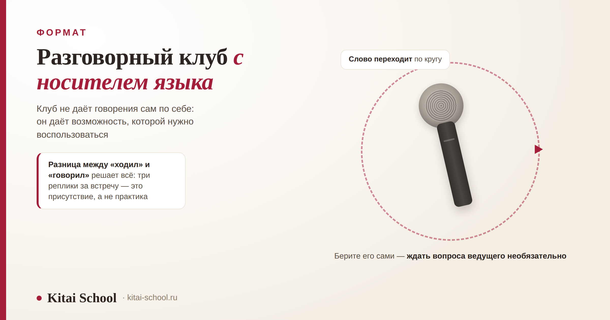
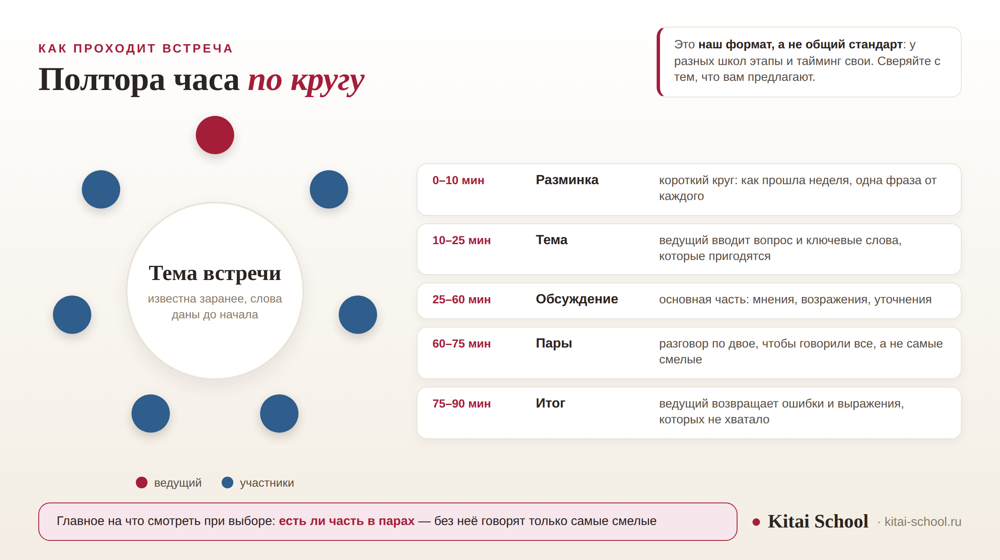

Формат занятий
Разговорный клуб с носителем языка: как устроены встречи, кому подходит и что говорить, чтобы не молчать


Разговорный клуб с носителем языка записывают к себе в план почти все, кто дошёл до середины учебника и обнаружил, что читает прилично, а говорит с трудом. Ожидания при этом разные: одни думают, что их будут учить, другие — что просто дадут поболтать. Ни то ни другое формат не описывает, и поэтому часть людей уходит из клуба разочарованной. Разберём по порядку: что такое клуб, как проходит встреча, чем клуб с носителем отличается от клуба с преподавателем, с какого уровня туда имеет смысл идти, как выбрать встречу и что говорить, чтобы участвовать, а не отсиживаться.
Клуб — не урок и не болтовня: есть тема, ведущий и распределение слова. Нового там не объясняют — применяют то, что уже есть. Точка входа — примерно HSK 2–3, раньше только в начальный клуб. Носитель и преподаватель решают разные задачи. Главное при выборе — размер группы и работа в парах. Результат зависит от вашей роли на встрече, а не от самой встречи.
Что такое разговорный клуб и чем он не является
Разговорный клуб — это регулярная встреча небольшой группы, на которой полтора часа говорят на изучаемом языке по заранее объявленной теме. У встречи есть ведущий: он задаёт вопрос, следит за временем и за тем, чтобы говорили все.
Проще всего понять формат через то, чем он не является. Сравнение ниже я составила по разговорам с учениками: каждая строка — чьё-то реальное ожидание, не совпавшее с действительностью.
| Формат | Что в нём есть | Чем отличается клуб |
|---|---|---|
| Урок | программа, новая тема и проверка усвоенного | в клубе нового не объясняют: он про применение того, что уже есть |
| Свободная болтовня | говорят кто о чём и кто сколько захочет | в клубе есть тема, ведущий и распределение слова |
| Языковой обмен | двое помогают друг другу, каждый в своём языке | в клубе язык один и помощь идёт в одну сторону |
| Урок с репетитором | всё время занятия принадлежит одному ученику | в клубе время делится на всех — это устройство формата, а не недостаток |
Из таблицы видно главное свойство формата: в клубе ничего нового не дают. Там нет объяснения грамматики, постановки тонов и работы с иероглификой — всё это остаётся занятиям. Клуб нужен для другого: чтобы выученное начало выходить изо рта без паузы на перевод в голове. Если базы пока нет, клуб её не создаст, и с этим лучше определиться до первой встречи, а не после третьей.
Вторая половина ожиданий — противоположная: приду и наконец свободно поговорю. Свободно поговорить в группе из десяти человек не выйдет по арифметике: за полтора часа на каждого приходится несколько минут чистого говорения. Как эта арифметика работает в учебной группе, мы разбирали отдельно: групповые занятия по китайскому. В клубе она такая же, и именно из-за неё приличные клубы делят участников на пары хотя бы раз за встречу.
Как проходит встреча
Единого стандарта у клубов нет: это не нормативный формат, и каждая школа собирает его по-своему. Ниже — то, как встреча устроена у нас: полтора часа, пять частей, группа до восьми человек. Берите этот порядок как образец для сравнения с тем, что предлагают вам, а не как обязательный.
| Время | Этап | Что происходит |
|---|---|---|
| 0–10 минут | Разминка | короткий круг: каждый говорит одну-две фразы о своей неделе |
| 10–25 минут | Ввод темы | ведущий задаёт вопрос и даёт шесть-десять выражений, которые понадобятся |
| 25–60 минут | Обсуждение | мнения, согласия, возражения, уточнения; ведущий следит, чтобы говорили не только те, кому легко |
| 60–75 минут | Разговор в парах | по двое, о том же вопросе: за пятнадцать минут каждый говорит больше, чем за полчаса круга |
| 75–90 минут | Итог | ведущий возвращает записанное: частые ошибки и выражения, которых не хватило |

Два этапа из пяти чаще всего и отсутствуют в слабых клубах. Первый — ввод темы: шесть-десять выражений, выданных до обсуждения. Без них участник говорит теми словами, которые у него уже есть, то есть повторяет свой набор из встречи в встречу. Второй — разговор в парах: пятнадцать минут по двое дают каждому больше говорения, чем сорок минут общего круга, потому что в паре нельзя промолчать. Если части в парах нет, спросите почему.
Про итог скажу отдельно: ведущий, который всю встречу помечает ошибки и удачные фразы, а в конце возвращает их группе, делает клуб учебным, а не просто приятным. Если ошибки не собирают, они повторяются.
Чем клуб с носителем отличается от клуба с преподавателем
Разговорный клуб с носителями и клуб, который ведёт русскоязычный преподаватель, — это два разных занятия с одинаковым названием. Выбирать между ними нужно по задаче, которая стоит перед вами сейчас.
| Что сравниваем | Клуб с носителем | Клуб с преподавателем |
|---|---|---|
| Что слышите | живую речь со скоростью, сокращениями и привычными оборотами | речь, которую сознательно упрощают под ваш уровень |
| Что получаете взамен | привычку понимать на слух и не теряться от быстрого темпа | разбор ошибки сразу и объяснение, почему правильно так |
| Чего не ждать | объяснения грамматики на русском и разбора, почему вы ошиблись | полного погружения: преподаватель по-русски говорит и будет этим пользоваться |
| Кому заметнее пользы | тем, кто уже знает правила, но не успевает их применять | тем, у кого правила ещё шатаются и ошибки повторяются |
Частая ошибка — взять носителя без базы: полтора часа речи, которую не успеваешь разобрать. Зеркальная — годами ходить туда, где всё объясняют по-русски, имея твёрдую грамматику и не имея скорости.
Ученица ходила в клуб полгода и была уверена, что он ей не помогает. Приходила, слушала, уходила. На занятии со мной сказала прямо: зря трачу вечер.
Стали разбирать по минутам. За полтора часа она произносила три-четыре фразы, и все — в ответ на прямой вопрос ведущего. Сама не вступала ни разу: пока собирала фразу, тему успевали сменить.
Клуб мы менять не стали. Договорились о двух вещах: приходить с готовым мнением по объявленной теме и вступать в разговор первой хотя бы дважды за встречу. Для второго выучили несколько фраз на то, чтобы взять слово.
Через месяц она сказала, что клуб внезапно стал полезным. Клуб при этом не изменился: та же группа, тот же ведущий, те же полтора часа. Изменилась только её роль в нём.
Клуб не даёт говорения сам по себе — он даёт возможность, которой нужно воспользоваться.
История эта не про силу воли, а про устройство формата. В клубе слово не выдают — его берут. Если вы отвечаете только на прямой вопрос, ваша норма — три-четыре фразы за встречу, сколько бы месяцев вы ни ходили.
С какого уровня имеет смысл идти
Важно не количество слов, а способность собрать короткое высказывание без подготовки.
| Уровень | Вердикт | Почему так |
|---|---|---|
| До HSK 1 | рано | слов на реплику не хватает, и встреча превращается в полтора часа слушания |
| HSK 1 — начало HSK 2 | можно, если клуб начальный | темы бытовые, ведущий спрашивает каждого по очереди, опорные фразы даны заранее |
| HSK 2–3 | обычная точка входа | хватает на короткое мнение, вопрос и уточнение |
| HSK 4 и выше | нужен не меньше | словарь большой, а беглости нет: говорить негде |
Отдельный случай — большой пассивный словарь при слабом произношении: носитель будет переспрашивать, участник замкнётся, так что сначала стоит заняться звуками и тонами: корректировка произношения. На HSK 4 и выше клуб, наоборот, считают пройденным этапом, хотя разрыв между знанием и речью виден как раз здесь: курс по разговорной речи. Понять, где вы, помогает общая последовательность: этапы изучения китайского.
Что говорить, чтобы участвовать
Молчат в клубе редко из-за того, что нечего сказать: обычно мысль есть, а фразы, которой её начать, нет, и пока человек её собирает, разговор уходит вперёд. Лечится это заготовками, которые выговариваются не задумываясь.
Вступить в разговор
| Фраза | Пиньинь | Дословно | Когда говорить |
|---|---|---|---|
| 我也想说一句 | wǒ yě xiǎng shuō yí jù | я тоже хочу сказать одну фразу | короткий способ взять слово, не перебивая |
| 我有一个问题 | wǒ yǒu yí ge wèntí | у меня есть один вопрос | когда по теме сказать нечего, а вступить хочется |
Согласиться и поддержать
| Фраза | Пиньинь | Дословно | Когда говорить |
|---|---|---|---|
| 我同意你的看法 | wǒ tóngyì nǐ de kànfǎ | я согласен с твоим взглядом | полная форма, звучит нейтрально и вежливо |
| 我也这么觉得 | wǒ yě zhème juéde | я тоже так чувствую, так считаю | разговорный вариант, короче и мягче |
Возразить мягко
| Фраза | Пиньинь | Дословно | Когда говорить |
|---|---|---|---|
| 我有点不同的看法 | wǒ yǒudiǎn bùtóng de kànfǎ | у меня немного другой взгляд | мягкое начало возражения |
| 话是这么说，不过…… | huà shì zhème shuō, búguò… | слова такие, однако… | признать правоту и всё же возразить |
Обратите внимание на 有点 в первой строке: оно снижает резкость, без него фраза звучит жёстче. Вежливость формулы зависит от того, кому вы её говорите, и единственного скрытого смысла я ни одной не приписываю.
Уточнить непонятое
| Фраза | Пиньинь | Дословно | Когда говорить |
|---|---|---|---|
| 不好意思，这个词是什么意思 | bù hǎoyìsi, zhège cí shì shénme yìsi | извините, это слово — какой смысл | остановиться на незнакомом слове |
| 你能再说一遍吗 | nǐ néng zài shuō yí biàn ma | ты можешь сказать ещё один раз | если не расслышали или не успели за темпом |
| 你的意思是……吗 | nǐ de yìsi shì… ma | твой смысл — это…? | проверить, верно ли поняли |
Выиграть время
| Фраза | Пиньинь | Дословно | Когда говорить |
|---|---|---|---|
| 让我想一想 | ràng wǒ xiǎng yi xiǎng | дай мне подумать | собеседник будет ждать, а не перехватит слово |
| 怎么说呢 | zěnme shuō ne | как же это сказать | заполнитель паузы, носители говорят так постоянно |
Молчание читается как нежелание говорить, и слово переходит к другому; 让我想一想 означает просьбу подождать, и вас подождут. Кто постеснялся переспросить или замолчал, теряет нить на второй минуте и дальше просто присутствует.
Учить их лучше не списком: возьмите по одной фразе из каждой группы и положите листок перед собой на встрече — задача употребить каждую.
Как выбрать клуб: Москва и онлайн
Разговорный клуб с носителем языка в Москве и такой же клуб онлайн по устройству не различаются. Офлайн привязывает к расписанию, зато вживую легче вступать в разговор; онлайн собирает группу одного уровня из разных городов, а это важнее формата связи.
| О чём спросить | Что выяснить | Почему это важно |
|---|---|---|
| Размер группы | сколько приходит обычно, а не сколько записано | в кругу из двенадцати на каждого остаётся пара минут |
| Часть в парах | делятся ли участники по двое | без неё говорят только самые смелые |
| Кто ведёт | носитель, преподаватель или волонтёр | ведущий без опыта обычно говорит сам больше всех |
| Тема заранее | присылают ли вопрос и слова до встречи | подготовка меняет результат сильнее остального |
| Ошибки | собирает ли ведущий их на итог | иначе они повторяются из встречи в встречу |
Самый показательный — первый: уклончивый ответ обычно означает, что группа больше, чем хотелось бы. Про клуб в Москве добавлю: дорогу стоит посчитать заранее — сорок минут в один конец после работы решают, будете ли вы ходить через два месяца. Цены я не сравниваю намеренно; как считать их честно: школа китайского языка в Москве.
У нас разговорный клуб идёт как часть обучения: группа одного уровня, тема и слова заранее, обязательная работа в парах. Посмотреть программы и расписание — онлайн-курсы китайского. Оставить заявку или написать в Telegram.
Что делать до и после встречи
Подготовка занимает двадцать минут и меняет результат сильнее выбора клуба.
- Написать своё мнение по теме — три-четыре предложения, чтобы мысль была готова, когда дойдёт очередь.
- Выписать пять слов, которых не хватит. Найденные заранее вы употребите, недостающие обойдёте.
После встречи — ещё десять минут: записать мысль, оставшуюся непроизнесённой, повторить то, что вернул ведущий, отметить число своих реплик. О сроках скажу прямо: обещать, что вы заговорите через месяц клубов, я не буду. Уверенно можно сказать одно: тот, кто берёт слово сам, продвигается быстрее того, кто ждёт вопроса.
Частые вопросы (FAQ)
Что такое разговорный клуб с носителем языка?
Это встреча нескольких человек, которые полтора часа говорят на китайском на заранее объявленную тему, а ведёт её носитель языка. От урока клуб отличается тем, что нового здесь не объясняют, от болтовни — тем, что есть ведущий и порядок слова.
С какого уровня можно идти в разговорный клуб?
Обычная точка входа — около HSK 2–3: этого хватает на короткое мнение, вопрос и просьбу повторить. Раньше можно только в клуб для начинающих, где ведущий спрашивает каждого по очереди. До HSK 1 идти рано.
Чем разговорный клуб с носителями отличается от клуба с преподавателем?
У форматов разные задачи. Носитель даёт живую речь со скоростью и привычными оборотами, что тренирует слух; преподаватель разберёт ошибку сразу и объяснит по-русски. Если правила ещё шатаются, полезнее второе; если беглости нет — первое.
Как выбрать разговорный клуб с носителем языка в Москве или онлайн?
Смотреть стоит на пять вещей: сколько человек приходит обычно, есть ли часть в парах, кто ведёт встречу, присылают ли тему заранее и что происходит с ошибками в конце. По устройству клуб в Москве и онлайн-клуб не различаются.
Сколько раз в неделю нужно ходить в клуб?
Одного раза достаточно, если между встречами вы готовите мнение по следующей теме и повторяете выражения с прошлой: два раза без подготовки дают меньше, чем один раз с ней.
Заменяет ли разговорный клуб занятия с преподавателем?
Нет, и это не недостаток формата. В клубе не ставят произношение и не объясняют грамматику, там применяют то, что уже есть: занятия дают материал, клуб даёт место, где он начинает работать в живой речи.
На следующей встрече возьмите слово первым! 我先说吧！
Источники
- Практика Kitai School. Устройство встречи, тайминг этапов, размер группы и правило работы в парах — наш формат, а не общий стандарт: разговорный клуб не нормативное понятие. Оттуда же наблюдения о молчащих.
- Разговорные формулы в пяти таблицах — общеупотребительные выражения с дословным переводом по знакам; вежливость каждой зависит от собеседника и ситуации, поэтому единственного прочтения ни одной не приписано.
- Чего в статье нет намеренно: скрытых смыслов, которых не найти в словарях; обещаний результата к сроку; цен и сравнения школ; статистики по числу клубов.
- Чего клуб не делает: не ставит произношение, не объясняет грамматику и не заменяет занятия. Утверждения, что носитель лучше преподавателя, в статье тоже нет.